На главную
Git
Атомарные коммиты
"Атомарные" изменения производятся для одной
задачи или одного исправления.
Преимущества
- Легко просматривать историю проекта;
- Легче найти ошибку;
Команды "командной строки Windows"
- CD Вывод имени либо смена текущей папки.
- CLS Очистка экрана.
- DIR Вывод списка файлов и подпапок из указанной папки.
Команды Git
- git add - добавляет файлы в выбранный репозиторий.
- git init Эта команда используется для создания GIT репозитория.
- git commit для коммита изменений в файлах проекта.
- git status отображает список измененных файлов, вместе с файлами,
которые еще не были добавлены в индекс или ожидают коммита.
- git push Позволяет поместить изменения в главную ветку
удаленного хранилища связанного с рабочим каталогом.
- git diff Для выявления различий с базовыми файлами.
- q - для выхода.
Git
Как в командной строке перейти с одного диска на другой
Для того, чтобы пререйти с одного диска на другой(например с диска C на диск D)
нужно напечатать следующее:
cd /d d:(название папки).
Выглядеть это должно примерно так:
C:\Users\DELL>cd /d d:\Pascal\NotSchool\
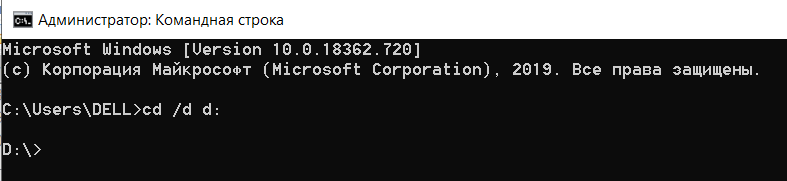
Переход внутри одного логическго диска
cd - change directory
cd /d - change directory c переходом на другой логический диск.
Как запуститть компилятор javac в командной строке
- Зайти в нужную папку на нужный диск! Например:
C:\Program Files (x86)\PascalABC.NET>cd /d "D:\java_programming\commandline"
- Написать имя программы с раcширением! Обязательно указать какой компилятор мы используем(в данном случае это javac)!
Например:
D:\java_programming\commandline>javac HelloWorld.java
- Запустить программу.НО!!! Обязательно перед именем программы указать, что эта программа java! Примерно так:
D:\java_programming\commandline>java HelloWorld
Hello world by Java!
Branches
Только что инициализированный репозиторий содержит только одну ветку —
master. Она используется в качестве основной и выбрана сразу.
Как только вы начинаете работать с новыми репозиторием,
вы работаете в ветке master, её не нужно специально
выбирать. Всё остальное опционально. Вот основные причины
использовать ветвление:
- Одновременная поддержка нескольких версий.
Такое всегда есть у коробочного софта. Например,
версии браузеров или операционных систем.
- Работа над задачами в ветках не
блокирует возможность правок в основной ветке.
Например, во время реализации сложной
функциональности может потребоваться срочно внести
изменение в работающий проект.
Pull-request
Пул реквест (pull request) - это запрос к управляющему каким-либо
репозиторием (человеку, группе людей или вообще роботу)
на применение изменений (из вашего репозитория и/или
указанной вами ветки).
- Пулл-реквест (ПР) должен быть хорошо
оформлен и содержать исчерпывающее описание.
- Обычное правило, один баг - один ПР, одна
фича - один ПР. Не нужно пытаться впихнуть сразу
кучу всего.
- Очень важно соблюдать Code Style того проекта,
для которого вы делаете ПР. Пусть даже он кажется
вам противоестественным (например вы всегда делаете
отступы в виде 4 пробелов, а в проекте табы).
Команды Git в картинках
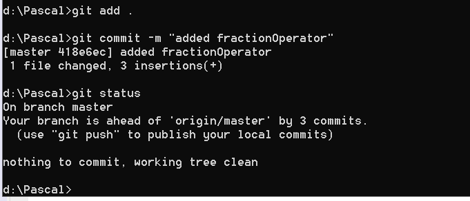
Добавление комментария в командной строке
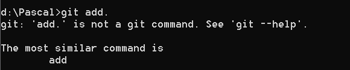
Все аргументы командной строки должны вводиться через пробел
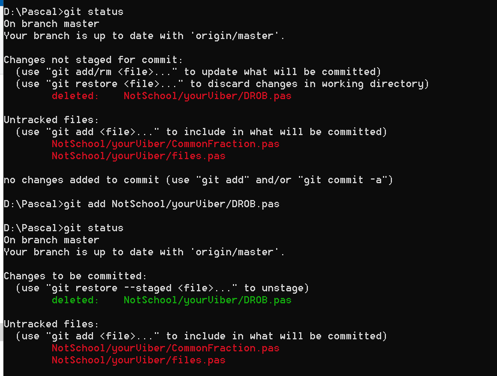
Удаление файла в Git-репозитории
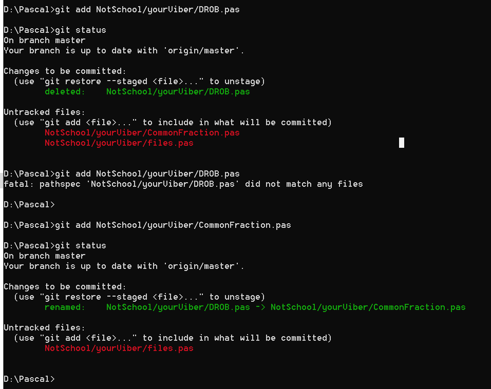
Переименование файла в командной строке
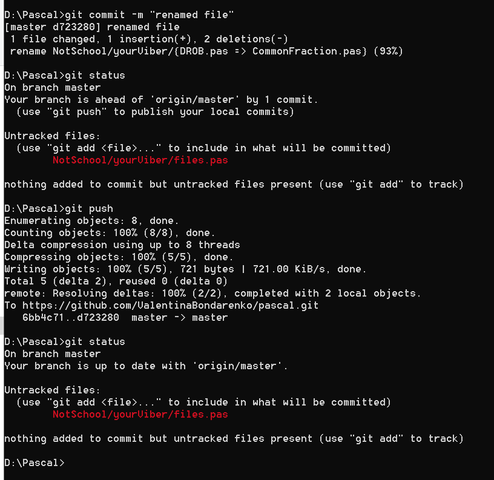
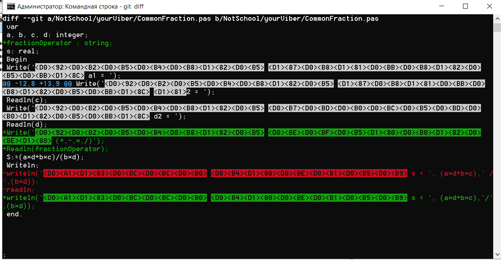
Команда Git diff показывает все изменения в файле
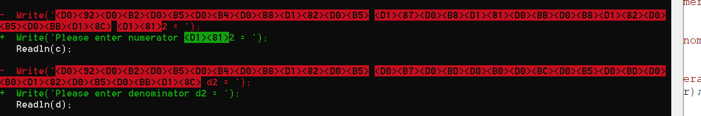
команда diff отображает русские символы
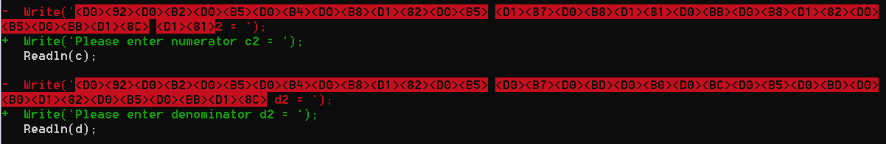
Замена русских символов на латинские
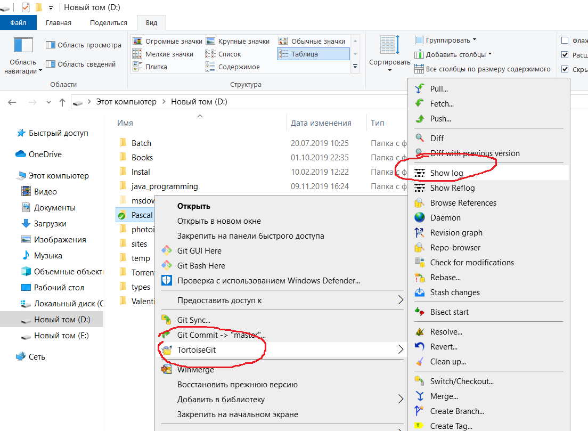
Показывает изменения в текущем файле
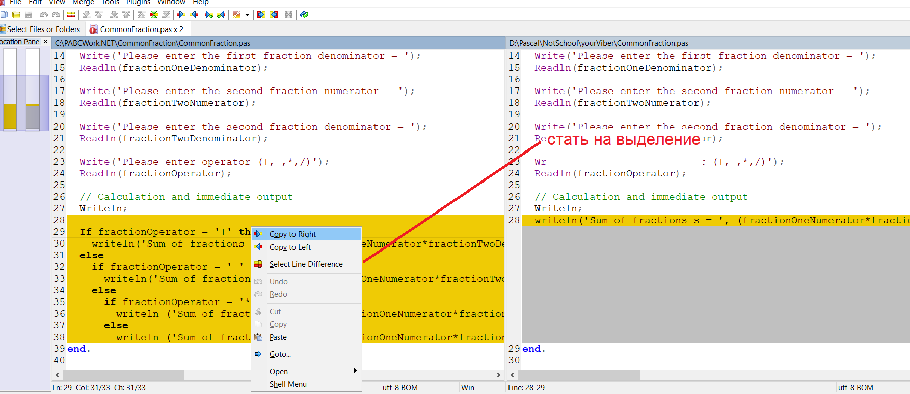
Копия изменений
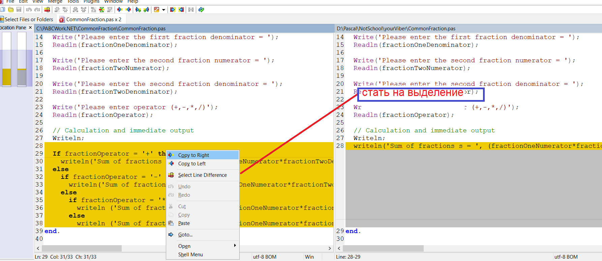
Показывает изменения в файлах
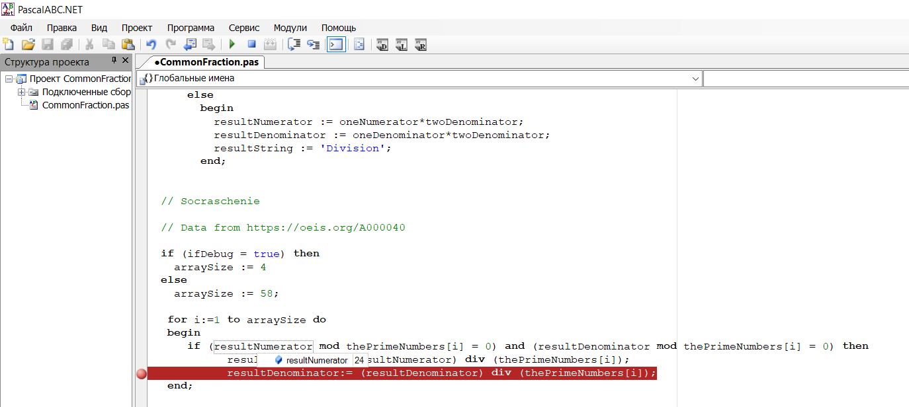
Если в операторе If не один, а несколько операций их нужно заключить в
зарезервированные слова begin end; , иначе работать будет только первая
операция!!!